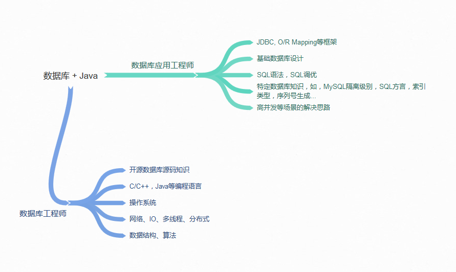

- 00 开篇词 以面试题为切入点，有效提升你的Java内功.md.html
- 01 谈谈你对Java平台的理解？.md.html
- 02 Exception和Error有什么区别？.md.html
- 03 谈谈final、finally、 finalize有什么不同？.md.html
- 04 强引用、软引用、弱引用、幻象引用有什么区别？.md.html
- 05 String、StringBuffer、StringBuilder有什么区别？.md.html
- 06 动态代理是基于什么原理？.md.html
- 07 int和Integer有什么区别？.md.html
- 08 对比Vector、ArrayList、LinkedList有何区别？.md.html
- 09 对比Hashtable、HashMap、TreeMap有什么不同？.md.html
- 10 如何保证集合是线程安全的_ ConcurrentHashMap如何实现高效地线程安全？.md.html
- 11 Java提供了哪些IO方式？ NIO如何实现多路复用？.md.html
- 12 Java有几种文件拷贝方式？哪一种最高效？.md.html
- 13 谈谈接口和抽象类有什么区别？.md.html
- 14 谈谈你知道的设计模式？.md.html
- 15 synchronized和ReentrantLock有什么区别呢？.md.html
- 16 synchronized底层如何实现？什么是锁的升级、降级？.md.html
- 17 一个线程两次调用start()方法会出现什么情况？.md.html
- 18 什么情况下Java程序会产生死锁？如何定位、修复？.md.html
- 19 Java并发包提供了哪些并发工具类？.md.html
- 20 并发包中的ConcurrentLinkedQueue和LinkedBlockingQueue有什么区别？.md.html
- 21 Java并发类库提供的线程池有哪几种？ 分别有什么特点？.md.html
- 22 AtomicInteger底层实现原理是什么？如何在自己的产品代码中应用CAS操作？.md.html
- 23 请介绍类加载过程，什么是双亲委派模型？.md.html
- 24 有哪些方法可以在运行时动态生成一个Java类？.md.html
- 25 谈谈JVM内存区域的划分，哪些区域可能发生OutOfMemoryError_.md.html
- 26 如何监控和诊断JVM堆内和堆外内存使用？.md.html
- 27 Java常见的垃圾收集器有哪些？.md.html
- 28 谈谈你的GC调优思路_.md.html
- 29 Java内存模型中的happen-before是什么？.md.html
- 30 Java程序运行在Docker等容器环境有哪些新问题？.md.html
- 31 你了解Java应用开发中的注入攻击吗？.md.html
- 32 如何写出安全的Java代码？.md.html
- 33 后台服务出现明显“变慢”，谈谈你的诊断思路？.md.html
- 34 有人说“Lambda能让Java程序慢30倍”，你怎么看？.md.html
- 35 JVM优化Java代码时都做了什么？.md.html
- 36 谈谈MySQL支持的事务隔离级别，以及悲观锁和乐观锁的原理和应用场景？.md.html
- 37 谈谈Spring Bean的生命周期和作用域？.md.html
- 38 对比Java标准NIO类库，你知道Netty是如何实现更高性能的吗？.md.html
- 39 谈谈常用的分布式ID的设计方案？Snowflake是否受冬令时切换影响？.md.html
- 周末福利 谈谈我对Java学习和面试的看法.md.html
- 结束语 技术没有终点.md.html
- 捐赠
36 谈谈MySQL支持的事务隔离级别，以及悲观锁和乐观锁的原理和应用场景？
在日常开发中，尤其是业务开发，少不了利用Java对数据库进行基本的增删改查等数据操作，这也是Java工程师的必备技能之一。做好数据操作，不仅仅需要对Java语言相关框架的掌握，更需要对各种数据库自身体系结构的理解。今天这一讲，作为补充Java面试考察知识点的完整性，关于数据库的应用和细节还需要在实践中深入学习。
今天我要问你的问题是，谈谈MySQL支持的事务隔离级别，以及悲观锁和乐观锁的原理和应用场景？
典型回答
所谓隔离级别（Isolation Level），就是在数据库事务中，为保证并发数据读写的正确性而提出的定义，它并不是MySQL专有的概念，而是源于ANSI/ISO制定的SQL-92标准。
每种关系型数据库都提供了各自特色的隔离级别实现，虽然在通常的定义中是以锁为实现单元，但实际的实现千差万别。以最常见的MySQL InnoDB引擎为例，它是基于 MVCC（Multi-Versioning Concurrency Control）和锁的复合实现，按照隔离程度从低到高，MySQL事务隔离级别分为四个不同层次：
读未提交（Read uncommitted），就是一个事务能够看到其他事务尚未提交的修改，这是最低的隔离水平，允许脏读出现。
读已提交（Read committed），事务能够看到的数据都是其他事务已经提交的修改，也就是保证不会看到任何中间性状态，当然脏读也不会出现。读已提交仍然是比较低级别的隔离，并不保证再次读取时能够获取同样的数据，也就是允许其他事务并发修改数据，允许不可重复读和幻象读（Phantom Read）出现。
可重复读（Repeatable reads），保证同一个事务中多次读取的数据是一致的，这是MySQL InnoDB引擎的默认隔离级别，但是和一些其他数据库实现不同的是，可以简单认为MySQL在可重复读级别不会出现幻象读。
串行化（Serializable），并发事务之间是串行化的，通常意味着读取需要获取共享读锁，更新需要获取排他写锁，如果SQL使用WHERE语句，还会获取区间锁（MySQL以GAP锁形式实现，可重复读级别中默认也会使用），这是最高的隔离级别。
至于悲观锁和乐观锁，也并不是MySQL或者数据库中独有的概念，而是并发编程的基本概念。主要区别在于，操作共享数据时，“悲观锁”即认为数据出现冲突的可能性更大，而“乐观锁”则是认为大部分情况不会出现冲突，进而决定是否采取排他性措施。
反映到MySQL数据库应用开发中，悲观锁一般就是利用类似SELECT … FOR UPDATE这样的语句，对数据加锁，避免其他事务意外修改数据。乐观锁则与Java并发包中的AtomicFieldUpdater类似，也是利用CAS机制，并不会对数据加锁，而是通过对比数据的时间戳或者版本号，来实现乐观锁需要的版本判断。
我认为前面提到的MVCC，其本质就可以看作是种乐观锁机制，而排他性的读写锁、双阶段锁等则是悲观锁的实现。
有关它们的应用场景，你可以构建一下简化的火车余票查询和购票系统。同时查询的人可能很多，虽然具体座位票只能是卖给一个人，但余票可能很多，而且也并不能预测哪个查询者会购票，这个时候就更适合用乐观锁。
考点分析
今天的问题来源于实际面试，这两部分问题反映了面试官试图考察面试者在日常应用开发中，是否学习或者思考过数据库内部的机制，是否了解并发相关的基础概念和实践。
我从普通数据库应用开发者的角度，提供了一个相对简化的答案，面试官很有可能进一步从实例的角度展开，例如设计一个典型场景重现脏读、幻象读，或者从数据库设计的角度，可以用哪些手段避免类似情况。我建议你在准备面试时，可以在典型的数据库上试验一下，验证自己的观点。
其他可以考察的点也有很多，在准备这个问题时你也可以对比Java语言的并发机制，进行深入理解，例如，随着隔离级别从低到高，竞争性（Contention）逐渐增强，随之而来的代价同样是性能和扩展性的下降。
数据库衍生出很多不同的职责方向：
数据库管理员（DBA），这是一个单独的专业领域。
数据库应用工程师，很多业务开发者就是这种定位，综合利用数据库和其他编程语言等技能，开发业务应用。
数据库工程师，更加侧重于开发数据库、数据库中间件等基础软件。
后面两者与Java开发更加相关，但是需要的知识和技能是不同的，所以面试的考察角度也有区别，今天我会分析下对相关知识学习和准备面试的看法。
另外，在数据库相关领域，Java工程师最常接触到的就是O/R Mapping框架或者类似的数据库交互类库，我会选取最广泛使用的框架进行对比和分析。
知识扩展
首先，我来谈谈对数据库相关领域学习的看法，从最广泛的应用开发者角度，至少需要掌握：
数据库设计基础，包括数据库设计中的几个基本范式，各种数据库的基础概念，例如表、视图、索引、外键、序列号生成器等，清楚如何将现实中业务实体和其依赖关系映射到数据库结构中，掌握典型实体数据应该使用什么样的数据库数据类型等。
每种数据库的设计和实现多少会存在差异，所以至少要精通你使用过的数据库的设计要点。我今天开篇谈到的MySQL事务隔离级别，就区别于其他数据库，进一步了解MVCC、Locking等机制对于处理进阶问题非常有帮助；还需要了解，不同索引类型的使用，甚至是底层数据结构和算法等。
常见的SQL语句，掌握基础的SQL调优技巧，至少要了解基本思路是怎样的，例如SQL怎样写才能更好利用索引、知道如何分析SQL执行计划等。
更进一步，至少需要了解针对高并发等特定场景中的解决方案，例如读写分离、分库分表，或者如何利用缓存机制等，目前的数据存储也远不止传统的关系型数据库了。

上面的示意图简单总结了我对数据库领域的理解，希望可以给你进行准备时提供个借鉴。当然在准备面试时并不是一味找一堆书闷头苦读，我还是建议从实际工作中使用的数据库出发，侧重于结合实践，完善和深化自己的知识体系。
接下来我们还是回到Java本身，目前最为通用的Java和数据库交互技术就是JDBC，最常见的开源框架基本都是构建在JDBC之上，包括我们熟悉的JPA/Hibernate、MyBatis、Spring JDBC Template等，各自都有独特的设计特点。
Hibernate是最负盛名的O/R Mapping框架之一，它也是一个JPA Provider。顾名思义，它是以对象为中心的，其强项更体现在数据库到Java对象的映射，可以很方便地在Java对象层面体现外键约束等相对复杂的关系，提供了强大的持久化功能。内部大量使用了Lazy-load等技术提高效率。并且，为了屏蔽数据库的差异，降低维护开销，Hibernate提供了类SQL的HQL，可以自动生成某种数据库特定的SQL语句。
Hibernate应用非常广泛，但是过度强调持久化和隔离数据库底层细节，也导致了很多弊端，例如HQL需要额外的学习，未必比深入学习SQL语言更高效；减弱程序员对SQL的直接控制，还可能导致其他代价，本来一句SQL的事情，可能被Hibernate生成几条，隐藏的内部细节也阻碍了进一步的优化。
而MyBatis虽然仍然提供了一些映射的功能，但更加以SQL为中心，开发者可以侧重于SQL和存储过程，非常简单、直接。如果我们的应用需要大量高性能的或者复杂的SELECT语句等，“半自动”的MyBatis就会比Hibernate更加实用。
而Spring JDBC Template也是更加接近于SQL层面，Spring本身也可以集成Hibernate等O/R Mapping框架。
关于这些具体开源框架的学习，我的建议是：
从整体上把握主流框架的架构和设计理念，掌握主要流程，例如SQL解析生成、SQL执行到结果映射等处理过程到底发生了什么。
掌握映射等部分的细节定义和原理，根据我在准备专栏时整理的面试题目，发现很多题目都是偏向于映射定义的细节。
另外，对比不同框架的设计和实现，既有利于你加深理解，也是面试考察的热点方向之一。
今天我从数据库应用开发者的角度，分析了MySQL数据库的部分内部机制，并且补充了我对数据库相关面试准备和知识学习的建议，最后对主流O/R Mapping等框架进行了简单的对比。
一课一练
关于今天我们讨论的题目你做到心中有数了吗？ 今天的思考题是，从架构设计的角度，可以将MyBatis分为哪几层？每层都有哪些主要模块？
请你在留言区写写你对这个问题的思考，我会选出经过认真思考的留言，送给你一份学习奖励礼券，欢迎你与我一起讨论。
你的朋友是不是也在准备面试呢？你可以“请朋友读”，把今天的题目分享给好友，或许你能帮到他。
© 2019 - 2023 Liangliang Lee. Powered by gin and hexo-theme-book.